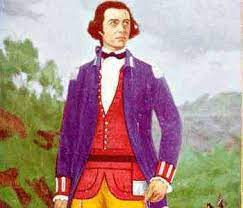
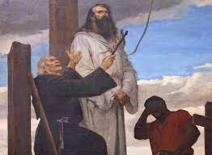
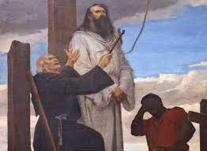

Tiradentes foi o único dos envolvidos na Inconfidência Mineira a ser condenado à morte.
Após a Proclamação da República, ele foi transformado em herói.

Joaquim José da Silva Xavier, também conhecido pelo apelido de “Tiradentes”, consagrou-se
por sua participação ativa na Inconfidência Mineira. Tragicamente, ele foi o único dos envolvidos
no movimento a receber a pena de morte, uma vez que os outros envolvidos foram perdoados pela Coroa
Portuguesa.
De uma família de origem humilde, Joaquim José nasceu na Capitania de Minas Gerais
,
em 12 de novembro de 1746. Com a morte prematura dos pais,Joaquim José precisou exercer inúmeros
trabalhos ao longo de sua vida, como a de dentista amador, função que lhe deu o apelido de “Tiradentes”.
Ele também havia trabalhado na mineração, porém, foi no posto de alferes nos quadros da cavalaria imperial
que Tiradentes alcançou certa estabilidade.Apesar da pouca instrução, ele era um republicano convicto e
adepto dos ideais do Iluminismo.
O movimento dos inconfidentes, organizado em 1788, foi consequência do contato dos colonos brasileiros
com os ideais iluministas divulgados na Europa, ideais que haviam, por sua vez, inspirado o movimento de
independência dos Estados Unidos.
Os historiadores atribuem a divulgação do pensamento iluminista no Brasil ao contato de estudantes
brasileiros com o Iluminismo ao serem enviados por suas famílias da elite econômica da colônia para
estudarem na Universidade de Coimbra, em Portugal. Os ideais iluministas foram muito difundidos,
principalmente, na Capitania das Minas Gerais, e isso se explica pelo fato de boa parte dos estudantes
brasileiros em Coimbra ser originária de Minas Gerais.
Além da propagação dos ideais iluministas, a Inconfidência Mineira aconteceu em consequência da insatisfação
das elites da Capitania de Minas Gerais com a pesada política de cobrança de impostos estabelecida pela
Coroa Portuguesa sobre os colonos. O visconde de Barbacena havia sido nomeado pela Coroa Portuguesa
como governador da capitania com o objetivo de promover a derrama, ou seja, a cobrança obrigatória dos
impostos sobre a extração do ouro.
A insatisfação com uma possível derrama mobilizou as elites da capitania contra o domínio português. Os
inconfidentes planejavam assassinar o governador da capitania e proclamar o republicanismo na Capitania de
Minas Gerais. Tiradentes era um dos envolvidos na conspiração, pois, além de ser um defensor dos ideais
iluministas, também havia sido prejudicado pela gestão do visconde de Barbacena ao ser destituído do
comando da cavalaria, que fiscalizava uma importante estrada da região.
O movimento conspirado pelas elites mineradoras, entretanto, não chegou a acontecer. Todos os envolvidos
foram denunciados por Joaquim Silvério dos Reis, que optou por denunciar o movimento para se livrar das
dívidas pessoais que havia adquirido com a Coroa Portuguesa. Assim, em 1789, o visconde de Barbacena
suspendeu a derrama e prendeu os envolvidos na conspiração – entre eles, Tiradentes.
 

A prisão de Tiradentes e outros inconfidentes ocorreu após a devassa (investigação). O processo de
julgamento dos envolvidos na Inconfidência estendeu-se por três anos. Durante esse período, muitos dos
presos negaram sua participação no movimento, com exceção de Tiradentes, que reconheceu abertamente seu
envolvimento. Alguns historiadores também afirmam que, durante os interrogatórios, muitos dos envolvidos
denunciaram o papel de Tiradentes na conspiração.
A sentença dos inconfidentes saiu em 1792 e determinava a pena de morte por enforcamento a dez pessoas.
Entretanto, por intermédio da Rainha D. Maria I, nove dos envolvidos na Inconfidência foram perdoados e
condenados ao degredo (expulsos do Brasil), enquanto a sentença de morte foi mantida para apenas um: Tiradentes.
Atribui-se esse fato a duas possibilidades: a primeira afirma que a sentença só foi mantida a Tiradentes por ele
não pertencer à elite mineradora e, portanto, não possuir influência na Coroa. A segunda possibilidade levantada
pelos historiadores é a de que, por falar abertamente do seu envolvimento na conspiração durante o interrogatório
Tiradentes foi considerado um elemento perigoso pela Coroa e, por isso, deveria ser eliminado.
Assim, Tiradentes foi usado como bode expiatório pela Coroa Portuguesa. Ele foi enforcado na manhã de 21 de abril
de 1792, na cidade do Rio de Janeiro. Em seguida, teve o corpo esquartejado em quatro partes e espalhado pela
estrada de acesso a Ouro Preto. Sua cabeça foi exibida em uma estaca colocada na praça central da cidade.
A condenação de Tiradentes foi utilizada como demonstração de força da Coroa para evitar que futuras rebeliões acontecessem.
A figura de Tiradentes permaneceu esquecida durante o resto do período do colonial e também no período imperial,
principalmente pelo caráter republicano dos envolvidos na Inconfidência Mineira, como afirma o historiador Boris Fausto:
o episódio [Inconfidência] incomodava, pois os conspiradores tinham pouca simpatia pela forma monárquica de governo. Além disso,
os dois imperadores do Brasil eram descendentes em linha direta da Rainha dona Maria, responsável pela condenação dos revolucionários|1|.
A imagem de Tiradentes como herói foi construída com a Proclamação da República. Os republicanos desejavam exaltar
as figuras de republicanos brasileiros em contraposição aos tempos de monarquia e, por causa disso, Tiradentes foi
escolhido pelo caráter da sua condenação. Republicano convicto, Tiradentes foi exaltado como um mártir do movimento
republicano e, portanto, um herói nacional.
Em consequência disso, o dia de sua execução, 21 de abril, foi estabelecido como feriado, e sua imagem passou a ser
retratada, muitas vezes, parecida com a de Cristo crucificado, uma forma de relacionar Tiradentes como mártir e herói.
Moeda brasileira de cinco centavos com o rosto de Tiradentes estampado.